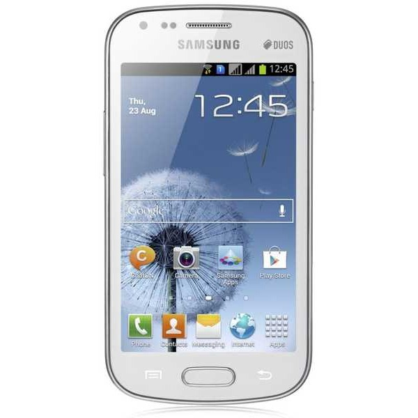
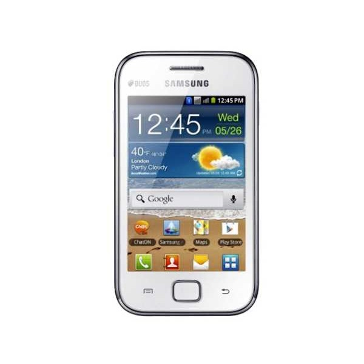
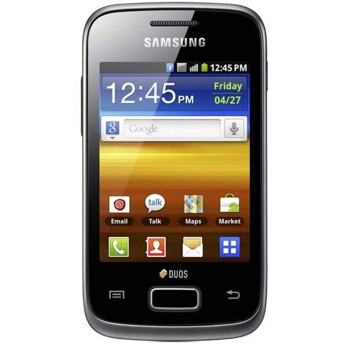
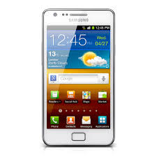
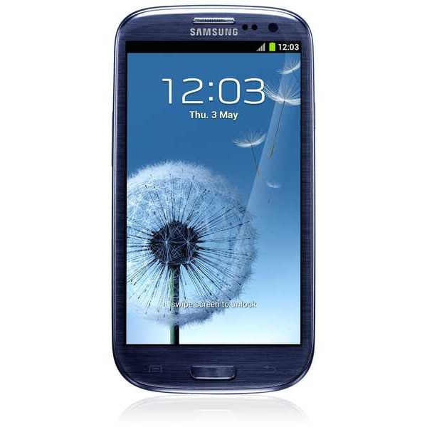

|
Nossos produtos: |
Produto |
Nome |
Descrição |
Preço |
Quantidade
Desejada |
|  |
Galaxy S Duos |
Baseado no sucesso do Galaxy S da Samsung,
o novo Galaxy S Duos
possue um estilo e design sofisticados,
alta performance e incrível usabilidade
com a conveniência do Dual Chip!
Sistema Operacional: Android 4.0 |
R$1400,00 |
|
|  |
Galaxy Ace Duos |
O Samsung Galaxy Ace Duos funciona com dois
Sim Cards ao mesmo tempo.
Com ele você pode estar conectado
com seus amigos e com o trabalho
em um único aparelho.
Sistema Operacional: Android 2.3 |
R$1100,00 |
|
|  |
Galaxy Y Duos |
Galaxy Y Duos é ideal para trabalho e diversão. O novo Galaxy Y Duos
para além de permitir ter 2 cartões
no mesmo telemóvel é um smartphone.
Com um design fantástico e ergonómico,
uma estrutura metálica polida de 11,98 mm e um ecrã táctil 3,14". |
R$700,00 |
|
|  |
Galaxy S II |
Com o Galaxy S II você tem o Android 2.3,
a qualidade da câmera de 8 MP
e a câmera frontal de 2 MP.
Além disso um processador Dual Core de 1.2 Ghz, Internet 3G de alta velocidade,
tem a velocidade do Wi-Fi Dual Channel
e desfruta seus vídeos em
Full HD numa tela de 4.27" |
R$1700,00 |
|
|  |
Galaxy S III |
Sistema Operacional: Android 4.0,
Tela: Tecnologia HD Super AMOLED,
Tamanho 4.8", Resolução 1280 x 720; Câmera: 8.0 MP |
R$2100,00 |
|
| Tipo de frete:
|
|